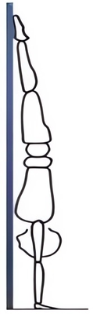

Стойка на руках у стены
Стойка на руках у стены. Уровни 1-4
Стойки на руках — критический компонент тренинга с собственным весом. В сущности, стойки на руках лежат в основе всех гимнастических упражнений. Важно правильно освоить это упражнение, поэтому оно стоит первым в категории навыков. И поэтому разучивание стоек на руках подробно освещается в таких специальных статьях, как статья Валентина Узунова (Valentin Uzunov) "Стойки на руках: освоение в четыре этапа" (The Handstand: a four stage training model).
- Руки на ширине плеч.
- Живот обращен к стене.
- Ладони располагаются как можно ближе к стене, но так, чтобы не опрокинуться.
- Руки выпрямлены.
- Ладони выталкиваются от плеч как можно дальше; плечи, расположены возле ушей (как наушники); подмышки максимально раскрыты.
- Грудной отдел позвоночника вытянут. Это означает, что грудь должна быть гордо распрямлена, как при хорошей осанке.
- Таз чуть отводится назад. Дело в том, что поясница обычно слегка прогибается при вытягивании в стойку, а это необходимо предотвратить. Чтобы выполнить это движение нужно одновременно сжать ягодицы и напрячь пресс, пытаясь притянуть пупок к позвоночнику. Это должно помочь в устранении прогиба (широко распространенная ошибка при выполнении стойки на руках).
- Направление ног нейтрально, так чтобы они образовывали одну линию с телом под любым углом зрения. Здесь, конечно, предоставляется небольшая свобода: бедра могут немного согнуться, чтобы коснуться пальцами ног стены. Чем ближе руки к стене, тем меньше сгиб бедер.
- Колени должны быть выпрямлены, а носки ног вытянуты, чтобы поддерживать тело в тонусе. Сами ноги должны быть прижаты друг к другу, чтобы создать напряжение и поддержать правильную стойку.
В общем, нужно стремиться к тому, чтобы стойка на руках была вытянута в прямую линию, без каких-либо прогибов.
Если тело превратится в негнущуюся линию, как деревянная планка, то управлять его положением можно лишь небольшими движениями. Эти небольшие движения будут совершать предплечья через кисти рук на полу. Для максимального управления пальцы рук должны быть расставлены как можно шире, чтобы через давление, производимое кончиками пальцев, поддерживать равновесие.
Положение кистей на полу мы рассмотрим в соответствующем разделе.
Предположу, что контроль стойки на руках только с помощью кистей вначале окажется делом трудным. Новички при освоении стойки стремятся использовать плечи и бедра, чтобы менять форму тела и сохранять равновесие. Это компенсирует отсутствие у них контроля со стороны предплечий, который необходим при правильной технике. Не поддавайтесь этому соблазну, потому что он породит плохие привычки, которые потом с трудом искореняются.
Правильно выполняемое удержание стойки на руках более минуты утомляет только предплечья, оставляя прочие мышцы свежими и незадействованными, за исключением, может быть, чувства легкого жжения в плечах.
Новичкам следует помнить, что касаться стены надо только кончиками пальцев ног и ничем больше. При расположении рук максимально близко к стене, любое отклонение от правильного, прямого положения тела легко обнаруживается. В случае прогиба живот коснется стены, либо придется выйти из стойки кувырком вперед или пируэтом.
Как только освоите стойку на руках у стены идите дальше: начинайте слегка отталкиваться пальцами ног от стены. Задействуйте кисти рук, чтобы противостоять перекосам, впиваясь пальцами в пол и предотвращая опрокидывание. Избегайте прогиба в пояснице, когда оттолкнетесь пальцами ног от стены. Все корректировки должны выполняться с помощью кистей рук.
- осваивайте свободную стойку на руках махом,
- продолжайте отработку стойки на руках у стены.
Выходы из стойки кувырком и пируэтом
Эти две техники являются основными способами экстренного выхода из стойки на руках. Если вы отрабатываете стойку у стены вам следует освоить кувырок как наиболее подходящий этому положению способ. Слишком ранние выходы пируэтом могут сформировать плохие привычки, поэтому здесь я не буду их описывать.
Выход кувырком из стойки на руках является разновидностью кувырка вперед на земле. Если вы не владеете кувырками вперед, вы должны начать их осваивание на мягком мате или траве. При кувырке вперед вам следует приложить усилие к рукам так, чтобы после того, как вы пригнете подбородок к груди, вы смогли бы перенести свой вес на тыльную сторону шеи и плавно перекатившись выйти из упражнения.
Аналогичным образом в стойке на руках вам необходимо медленно согнуть руки, чтобы контролируемо опуститься к полу. Далее нужно пригнуть подбородок к груди и сгруппировав тело в позу эмбриона позволить гравитации перекатить вас через кувырок.
Если вы не уверены в правильном исполнении кувырка или слишком боитесь его выполнять из стойки на руках, у вас есть два варианта. Первый вариант (предпочтительный) — попросить помощи страхующего. Страхующий может придержать ваши лодыжки, чтобы помочь вам исполнить кувырок в замедленном движении с зависанием. Другой вариант — пренебречь советом, который был даны выше, и разучить выход пируэтом с разворотом тела.
Стойка махом
Выход в стойку через выпад с махом очень часто неправильно понимается. Сначала надо практиковаться у стены, спиной к стене, чтобы прочувствовать сколько усилий необходимо для выхода. Так ли иначе, мы должны добиться как можно более уверенного его исполнения. С механической точки зрения существуют определенные инструкции, которых изучающие стойку махом должны придерживаться.
Во-первых, надо выпрямиться как в стойке на руках. Для того, чтобы заранее принять нужное положением, а не пытаться потом привести в него "совершенно не контролируемое тело". Таким образом, начинать нужно с поднятыми над головой руками, плечами возле ушей, расправленной грудью, напряженными плечами, ногами вместе и напряженным корсетом.
Во время махового движения меняется только одна часть этой конструкции: совершается выпад ногой. Нога, совершающая выпад, является этаким шарниром, на котором поворачивается прямое тело так, чтобы не нарушать тщательно выстроенную конструкцию из прямого туловища и рук над головой.
Выпад ногой следует делать на половину расстояния перед вами, затем на эту ногу будет перемещаться ваш вес при перевороте туловища. Стойка начинается с рук. Ключевым моментом для ноги, совершающей выпад, является по возможности сохранение прямого колена, чтобы поддержать напряжение в мышцах задней поверхности бедра. Как только руки коснутся пола, вцепитесь в него пальцами рук для стабилизации стойки по мере вхождения в нее. Напряжение в мышцах задней поверхности бедра используется для маха ногой и приставления ее к другой ноге.
Как только ноги будут соединены займите положение с совершенно прямым телом. Если прямолинейность чем-то нарушена, например разошедшимися ногам, то теряется внешняя форма стойки и это необходимо исправить. Не идеальное исполнение — частый случай при обучении. Воспользуйтесь камерой или чьей-нибудь компетентной помощью, чтобы со стороны определить свои ошибки.
Если вы можете выполнить выпад для стойки на руках правильно, значит вы в хорошей форме. Далее прикладываются усилия, необходимые для принятия правильного положения, посредством маха ногой и давлением, производимым кончиками пальцев. Опять же, поначалу вы можете использовать стену, чтобы определить степень прикладываемых усилий для маха ногой.
Как только вы выполните правильный мах ногой, вы почувствуете, что можете зафиксировать идеальную стойку на руках без каких-либо шатаний. Мои поздравления!
Замечу, что техника стойки на руках спиной к стене может использоваться для начального обучения стойке на руках. Это может оказаться подходящим, когда у обучающегося не хватает общей силы или техники и экстренный выход из стойки животом к стене может быть опасным или невозможным. Я настоятельно рекомендую, в случае использования этой техники, как можно быстрее пройти этот этап. Но если есть необходимость в ее использовании в начале, то это не является чем-то неправильным и сильно вредным. Только помните, что это всего лишь стартовое упражнение, и мы хотим в конечном итоге перейти от него к более продуктивным задачам. В общем, сосредоточьтесь на прямом теле и правильной технике, чтобы можно было двигаться дальше.